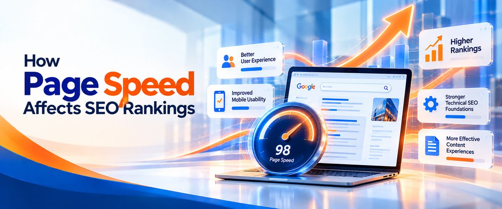

In today’s digital world, your website is often the first interaction potential customers have with your business. Whether someone discovers your company through Google, social media, or a referral, their experience on your website can influence whether they stay, explore your services, or leave for a competitor.
A slow-loading website, unexpected layout shifts, or unresponsive buttons can frustrate visitors and reduce the chances of generating enquiries. This is why website performance is an important part of SEO and conversion rate optimization.
Google uses a set of user experience metrics called Core Web Vitals to evaluate important aspects of website performance. These metrics focus on loading performance, responsiveness, and visual stability.
Understanding Core Web Vitals can help businesses create faster, more reliable websites that serve both users & search engines.
At Infinyx Global, we help businesses strengthen their digital presence through SEO, AEO, GEO, website development, website design and other digital solutions. Our in-house team of designers, developers, testers, content writers, and backlink specialists works together to help businesses build, optimize, and promote websites designed for long-term growth in less time.
In this guide, we explain Core Web Vitals, how page speed can influence rankings and leads, and what businesses can do to improve website performance.
What Are Core Web Vitals?
Core Web Vitals are a group of performance metrics developed by Google to measure important aspects of the real-world experience users have on a website.
They focus on three key areas:
- Loading performance: How quickly the main content becomes visible.
- Interactivity: How quickly a page responds when users interact with it.
- Visual stability: Whether page elements move unexpectedly while loading.
Google currently uses three primary Core Web Vitals metrics:
- Largest Contentful Paint (LCP)
- Interaction to Next Paint (INP)
- Cumulative Layout Shift (CLS)
These metrics help website owners identify performance issues that may affect usability.
Core Web Vitals are part of Google’s broader page experience considerations. However, passing these metrics does not guarantee higher rankings. Search rankings depend on many factors, including relevance, content quality (unique content), competition, and technical accessibility.
1. Largest Contentful Paint (LCP): How Quickly Does Your Main Content Load?
Largest Contentful Paint measures how long it takes for the largest visible image or text block within the viewport to render.
In simple terms, LCP helps indicate when users can see the main content they came to view.
For example, imagine a potential customer visits your website to explore your digital marketing services. If the main headline, hero section, banner, or service description takes too long to appear, the visitor may perceive the website as slow.
What Is a Good LCP Score?
Google’s recommended LCP thresholds are:
- Good: 2.5 seconds or less.
- Needs improvement: More than 2.5 seconds and up to 4 seconds.
- Poor: More than 4 seconds.
These thresholds are evaluated at the 75th percentile of page visits, considering mobile and desktop experiences separately.
Common Causes of Poor LCP
Several factors can delay the display of your main content:
- Slow server response times.
- Large, uncompressed images.
- Render-blocking CSS and JavaScript.
- Poor caching configuration.
- Slow third-party resources.
- Inefficient website themes or page builders.
How to Improve LCP
Businesses can improve LCP by optimizing images, videos, reducing unnecessary scripts, improving server response times, enabling appropriate caching, and prioritizing important above-the-fold content.
For example, a large hero image can often be converted to a modern image format and appropriately resized. Developers can also optimize font loading and remove resources that prevent the main content from rendering quickly.
How Infinyx Global can help: Our development and SEO teams can assess page-loading issues, identify bottlenecks, and implement suitable improvements to help visitors access important website content faster.
2. Interaction to Next Paint (INP): How Responsive Is Your Website?
Interaction to Next Paint measures how responsive a page is to user interactions, such as clicking a button, opening a menu, or selecting an option.
It considers the time between a user interaction and the next visual update displayed by the browser. INP replaced First Input Delay (FID) as a Core Web Vital in March 2024.
A website may appear to load quickly but still feel slow when users interact with it. For instance, a visitor may click a contact button, submit an enquiry form, or open a navigation menu and experience a noticeable delay.
Such delays can make a website feel unreliable.
What Is a Good INP Score?
Google’s recommended INP thresholds are:
- Good: 200 milliseconds or less.
- Needs improvement: More than 200 milliseconds and up to 500 milliseconds.
- Poor: More than 500 milliseconds.
Common Causes of Poor INP
Common causes include:
- Excessive JavaScript execution.
- Long-running browser tasks.
- Too many third-party scripts.
- Complex interactive components.
- Inefficient event handlers.
- Unnecessary code running when users interact with the page.
How to Improve INP
Developers can improve responsiveness by reducing unnecessary JavaScript, breaking up long tasks, simplifying interactive elements, and ensuring that important user actions receive timely processing.
Testing contact forms, navigation menus, search functions, and other interactive components is also important.
How Infinyx Global can help: Our in-house developers and testers can evaluate interactive elements, identify responsiveness issues, and test improvements across relevant devices and browsers.
3. Cumulative Layout Shift (CLS): Does Your Website Layout Stay Stable?
Cumulative Layout Shift measures unexpected movement of visible page elements during a page’s lifecycle.
Have you ever started reading an article, only for the text to move because an image loaded above it? Or clicked a button that suddenly shifted because another element appeared?
These are examples of layout instability.
Unexpected movements can interrupt reading, cause accidental clicks, and make a website feel poorly designed.
What Is a Good CLS Score?
Google’s recommended CLS thresholds are:
- Good: 0.1 or less.
- Needs improvement: More than 0.1 and up to 0.25.
- Poor: More than 0.25.
Common Causes of Poor CLS
Layout shifts may occur because of:
- Images without defined dimensions.
- Advertisements or embedded content inserted dynamically.
- Web fonts that change text appearance after loading.
- Banners that push existing content downward.
- Page elements injected without reserving space.
- Dynamically loaded components that change the layout.
How to Improve CLS
Developers should specify video and image dimensions, reserve space for advertisements and embedded content, manage font loading carefully, and avoid inserting new content above existing content without a user-initiated reason.
A stable layout makes it easier for visitors to read, navigate, and interact with your website.
How Infinyx Global can help: Our design, development, and testing teams can review page layouts, identify unexpected shifts, and implement improvements that support a more consistent user experience.
How Page Speed Affects SEO Rankings

Website speed matters because it contributes to the overall experience people have when using a website. However, page speed is not a simple ranking formula in which the fastest website always wins.
Google considers multiple signals and systems when determining search results. Relevance, content usefulness, authority, search intent, and many other factors remain important.
Core Web Vitals are part of Google’s page experience signals, but a website with excellent scores will not automatically outrank a more relevant and helpful competitor.
Still, performance improvements can support an effective SEO strategy in several ways.
Better User Experience
Visitors can access content more comfortably when pages load quickly, interactions respond promptly, and layouts remain stable.
Improved Mobile Usability
Mobile visitors may encounter slower network connections and less powerful devices. Optimizing performance can help create a smoother experience for these users.
Stronger Technical SEO Foundations
Performance improvements often overlap with broader technical SEO activities, such as improving resource loading, simplifying code, optimizing images, and reducing unnecessary scripts.
More Effective Content Experiences
High-quality content needs an accessible, usable website. Faster pages can help visitors reach service descriptions, case studies, blog articles, and contact information with less friction.
The key is to treat Core Web Vitals as part of a complete SEO strategy—not as a replacement for keyword research, useful content, internal linking, or authority building.
How Page Speed Affects Leads and Conversions
SEO helps potential customers discover your business, but your website must also encourage them to take action.
Imagine that a business owner finds your website through Google while searching for a service provider. The page loads slowly, the service information is difficult to access, and the enquiry form takes several seconds to respond.
Even if the visitor is interested in your services, this experience may create unnecessary friction.
Website performance can influence lead generation through several factors.
- Reduced visitor frustration: Fast, responsive pages make it easier for users to explore your offerings.
- Easier navigation: Visitors can move between service pages, blog posts, and contact sections with less friction.
- Smoother enquiry forms: Responsive forms help users complete important actions without unnecessary delays.
- Greater confidence: A stable and well-functioning website can contribute to a professional brand impression.
- Better mobile experiences: Users can interact with your business more comfortably on smartphones and tablets.
Improved Core Web Vitals do not guarantee more leads. Conversion performance also depends on your offer, pricing, content, audience, trust signals, and calls to action.
Businesses should measure both technical performance and actual outcomes, such as completed forms, qualified enquiries, phone calls, and sales conversions.
How to Measure Core Web Vitals
Before making changes, businesses should establish a performance baseline.
Several tools can help:
- Google PageSpeed Insights: Provides lab diagnostics and, where available, real-user field data.
- Google Search Console: Reports Core Web Vitals issues for groups of URLs when sufficient data is available.
- Chrome DevTools: Helps developers investigate rendering, JavaScript execution, and layout issues.
- Chrome User Experience Report (CrUX): Provides aggregated real-user experience data for eligible pages and origins.
It is important to understand the difference between lab data and field data. Lab tests run under controlled conditions and help identify potential issues. Field data reflects actual user experiences and may vary by device, connection, location, and page.
A page may score well in one test but still have problems for some real users. Regular monitoring is therefore essential.
How Infinyx Global Helps Improve Website Performance
At Infinyx Global, we believe a successful website must combine technical quality, effective design, useful content, and a clear path to conversion.
Our team brings together designers, developers, testers, content writers, and backlink specialists to support a coordinated digital growth strategy.
Our approach may include:
- Website performance audits: Identifying loading, responsiveness, and layout stability issues.
- SEO-friendly page development: Building new pages from scratch with appropriate structure, metadata, internal links, and search intent in mind.
- Existing page optimization: Improving page content, structure, technical elements, and usability.
- Image and resource optimization: Reviewing image sizes, loading priorities, caching, and unnecessary resources.
- Responsive design and testing: Checking important pages and interactions across relevant devices and browsers.
- Content optimization: Creating informative service pages and articles that meet audience needs.
- Ongoing monitoring: Reviewing performance and prioritizing improvements based on their potential impact.
When building new pages, we consider SEO requirements from the beginning instead of treating optimization as an afterthought. For existing websites, we identify practical improvements and coordinate implementation with our development and testing teams.
We provide digital and search optimization services to businesses across the globe, helping them build stronger online foundations and reach relevant audiences.
Our goal is not simply to improve a performance score. It is to help create a website that is technically sound, easy to use, search-friendly, and aligned with your business objectives.
Conclusion
Core Web Vitals provide valuable insight into how people experience your website. Largest Contentful Paint measures loading performance, Interaction to Next Paint evaluates responsiveness, and Cumulative Layout Shift measures visual stability.
Improving these metrics can support better usability, strengthen technical SEO foundations, and reduce friction throughout the customer journey. However, sustainable rankings and lead generation require a broader strategy that includes relevant content, technical SEO, clear messaging, and effective conversion paths.
Infinyx Global helps businesses bring these elements together through website development, SEO, AEO, GEO, and coordinated digital services.
Whether you need to build new pages from scratch or improve an existing website, our in-house team can help identify opportunities and implement practical improvements.
Infinyx Global — Your Growth Partner in the Digital World.